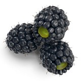

|  |
The dewberries are a group of species in the genus Rubus, section Rubus, closely related to the blackberries. They are small trailing (rather than upright or high-arching) brambles with aggregate fruits, reminiscent of the raspberry, but are usually purple to black instead of red. Dewberries are common throughout most of the Northern Hemisphere and are thought of as a beneficial weed. The leaves can be used to make a herbal tea, and the berries are edible and taste sweet. They can be eaten raw, or used to make cobbler, jam, or pie. Alternatively, they are sometimes referred to as ground berries. Around March and April, the plants start to grow white flowers that develop into small green berries. The tiny green berries grow red and then a deep purple-blue as they ripen. When the berries are ripe, they are tender and difficult to pick in any quantity without squashing them. The plants do not have upright canes like some other Rubus species, but have stems that trail along the ground, putting forth new roots along the length of the stem. The stems are covered with fine spines or stickers. The berries are sweet and, for many, less seedy than blackberries. In the winter the leaves often remain on the stems, but may turn dark red. The leaves are sometimes eaten by the larvae of some Lepidoptera species including peach blossom moths. The European dewberry, Rubus caesius, grows more upright like other brambles, but is frequently restricted to coastal communities, especially sand dune systems. Its fruits are a deep, almost black, purple and are coated with a thin layer or 'dew' of waxy droplets. Thus, they appear sky-blue (caesius is Latin for pale blue). It is less sought after, because its fruits are small and retain a markedly tart taste even when fully ripe. |